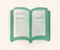
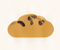
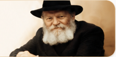

אירועים קרובים
סעודת שבת
י״ב תמוז • 19:30
הרשמה פתוחה
התוועדות לכבוד י״ג תמוז
20/07 • 21:00
הרשמה פתוחה
שיעור חסידות לנשים
22/07 • 20:30
הצטרפי אלינו
לוח אירועים מלא
הודעה מהשליח
ברוכים הבאים לבית חב״ד תל אביב!
אנו כאן בשבילכם, בכל זמן ובכל צורך.
בית חם לכל יהודי – מקומכם איתנו.
נשמח לראותכם!
הרב שניאור זלמן
זמני תפילות
היום, י׳ תמוז
שחרית
6:15
מנחה
19:10
ערבית
20:20

שיעורי תורהשיעורים קבועים
לכל הגילאים
הזמנת אוכל כשר
ומשלוחים

סעודות שבתהרשמה לסעודות
שבת ואירועים
מוצרים יהודיים,
ספרים ומתנות
צור קשר
אנחנו כאן בשבילך!
מענה מהיר לכל שאלה או בקשה
קמפיין נוכחי
תומכים בבית חב״ד תל אביב
יעד: 100,000 ₪
גויס עד כה: 68,450 ₪
68%
לכל הקמפיינים

משיח יגיע, תיכף ומיד ממש יחי אדוננו מורנו ורבינו מלך המשיח לעולם ועד